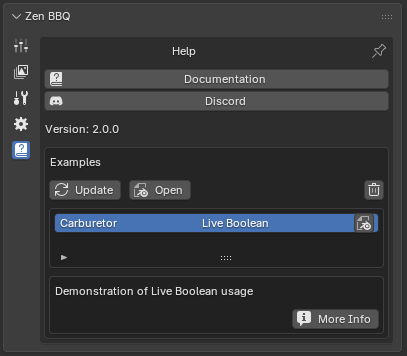
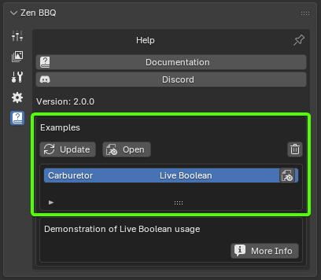

Help & Examples
The Help panel provides direct access to resources, community platforms, and interactive demonstration scenes designed to help you quickly master Zen BBQ’s modeling and baking pipelines.
Resources & Community
 |
|---|
| Fig. 1. Help panel interface featuring documentation, community links, and interactive examples. |
- Documentation: Instantly opens the official web documentation in your default browser for quick reference on tools and workflows.
- Discord: Opens a link to join the active Zen Masters Discord community—the perfect place to get support, share feedback, and connect with other 3D artists.
- Version: Displays the currently installed version of Zen BBQ.
Demonstration Examples
The Examples section allows you to browse, download, and explore pre-configured Blender scenes showcasing advanced techniques like Live Boolean workflows, correct UV setups, and material configurations.
 |
|---|
| Fig. 2. Interactive examples browser in the Help panel. |
Control Utilities
- Update: Connects to the server to download or refresh the list of available demonstration scenes, ensuring you always have access to the latest educational assets.
- Open: Downloads and loads the selected demonstration scene directly into your active Blender session.
- Trash Bin (Delete): Deletes the locally downloaded cache files of the selected demo scene from your disk to free up space.
Scene List & Details
- Interactive List: Displays all available scenes. Click on any entry to view its description and details.
- Blender Icon (Quick Open): Located on the right side of the active scene row. Click this icon to open the downloaded
.blendfile immediately. - More Info: Opens a web page with in-depth technical documentation and explanations for the selected example (e.g., detail break-downs of the Carburetor scene).